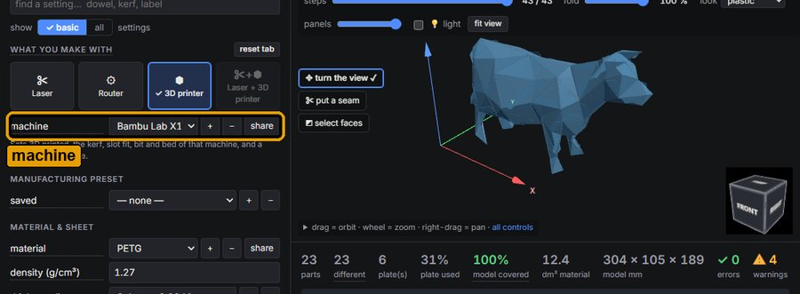
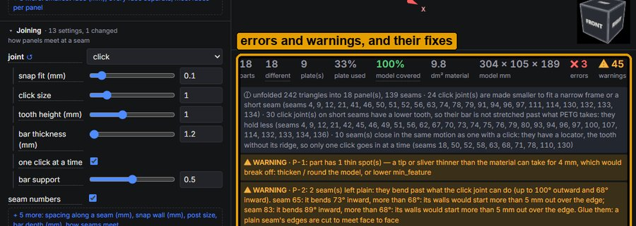

3D print a model as flat parts
Lamina cuts a model into flat parts, and a 3D printer can make those parts too. Each part lies flat on the bed, and a shape larger than the bed prints as many parts. Lamina puts the parts on your printer's plates and gives your slicer the files. It does not make G-code. Lamina is free and runs in your browser.
- 1. Start hereThe steps every job has: your model, its size, the checks, the files. Open
- 2. Your machine: this pageThe 3D printer in detail, on a model with folds. The other machines are in Laser, router or printer.
- 3. Your techniqueThe settings of one technique, and what each one changes. Stacked, Interlocking, Folded, Radial, Curve, Plaque or Bands
Set the printer
Every picture on this page shows one model: the cow that the link opens, in folded panels. Its panels print flat and fold up. An orange ring with a label marks the control to use. To use your own model, upload it on the Model tab: Start here shows how.
- Open Lamina on Folded Panels. On the Sheet & fit tab,
under What you make with, click 3D printer.

- In machine, pick your printer. Bambu Lab and Prusa printers are on the list with their bed size. For
another printer, type its bed size in sheet size.

- In material, pick PLA or PETG.

- On the Technique tab, set joint to click or snap. These joints close the seams
without glue.

- hinge skin thickness (mm) is the skin that stays at every fold. A panel prints at its full thickness
with a V groove along each fold, and this skin is the hinge.

- Read the errors and warnings under the 3D view. Correct every error before you print. This
cow has 0 errors and many warnings: each one names a seam that is too short or bends too far for a click
joint, and the buttons under it give the fixes.

- On the Export tab, click print set (.zip). It holds one 3MF for each plate, at full size.

- Each sheet under the 3D view is one plate, and one 3MF. Open each 3MF in your slicer, for example
OrcaSlicer. Then slice and print.

- Snap the number tags off the small parts. Put the parts together with the assembly key.
What each setting changes
joint
What closes a seam between two printed panels.
It changes the parts and the plates. With glue tabs, this cow is 23 parts on 6 plates. With click, a tooth on one panel snaps under a bar on the other: 16 parts on 4 plates, and no loose parts. With snap, a printed clip slides along a wall on each panel: 122 parts on 5 plates, most of them clips. Both joints bend up to 100° out and about 70° in. A seam that bends more stays plain, and a warning names it.

| Setting | What it does | It changes |
|---|---|---|
| machine | Sets the bed of your printer as the sheet. | The number of plates, and where a large panel is cut. |
| thickness (Sheet & fit) | How thick each panel prints. | The stiffness of the panels. |
| hinge skin thickness | The skin left at the bottom of every fold's groove. | Two layers, 0.4 mm, is a good start. PETG bends. PLA is brittle and folds once. |
| hinge width | The width of the flat strip of skin that bends. | Wider folds more easily and stops less sharply. |
| fold stop | Where each fold stops, in degrees past or short of the model's angle. | Folds that go too far on your printer: set it below 0. Folds that stop short: above 0. |
| snap fit | The room between a clip and its walls, or between the tooth and the bar. | The joint does not go on: more. It is loose: less. Print one seam first and set it for your printer and filament. |
What the print files carry
- Settings for each part. The layer height, bridges and supports of each part are in the 3MF, and OrcaSlicer applies them.
- A number on every part. A small part gets its number on a thin tag that you snap off.
- Clips and pins on the same plates as the parts they join.
- An assembly key and a README in each download.
Other techniques, printed
Stacked slices and ribs print as flat plates the same way: choose 3D printer and the same steps apply. To cut the layers with a laser and print only the posts between them, see Laser + 3D printer in Laser, router or printer.
Test-print before you cut
For a laser or router job, the 3MF prototype prints every part flat and scaled down, with its label in the surface. Print it, put it together, and then cut the real sheets.